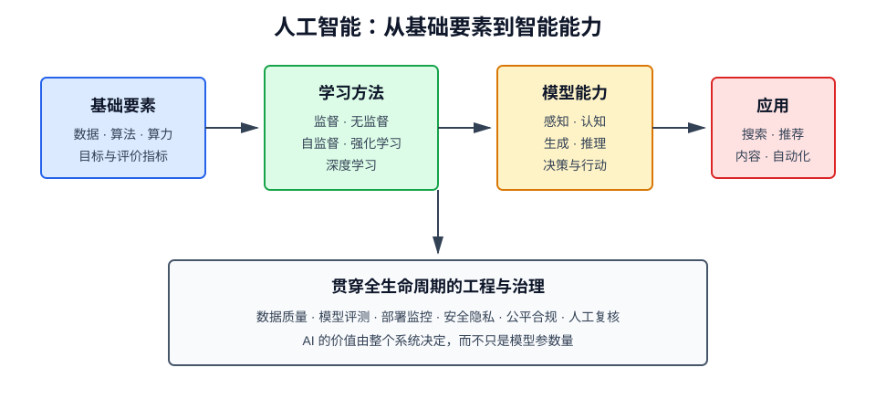

什么是 AI
1. 一句话理解
人工智能（Artificial Intelligence，AI）是让计算机完成通常需要人类智能才能完成的任务的一组理论、方法与工程技术，例如感知环境、理解语言、学习规律、推理决策和生成内容。
AI 不是某一种算法，也不等于机器人。它是一个覆盖算法、数据、算力、工程系统和应用场景的技术领域。

2. AI、机器学习与深度学习的关系
三者是包含关系，而不是并列关系：
- 人工智能：目标层，研究如何让机器表现出智能。
- 机器学习（Machine Learning，ML）：实现 AI 的主要路径，让模型从数据中学习规律。
- 深度学习（Deep Learning，DL）：机器学习的一个分支，使用多层神经网络自动学习复杂特征。
- 生成式 AI（Generative AI）：侧重生成文本、图像、音频、视频或代码，通常建立在深度学习和基础模型之上。
传统规则系统也属于 AI。例如专家系统可以通过大量 if-then 规则诊断设备故障，但它并没有从数据中训练参数。
3. AI 系统如何工作
一个典型的数据驱动 AI 系统包含以下环节：
- 定义任务：明确输入、输出、约束与评价指标。
- 收集数据：获取具有代表性且合法合规的数据。
- 表示数据：将文本、图像等信息转换为模型可处理的数值。
- 训练模型：通过优化算法调整参数，使预测误差逐步降低。
- 评估模型：在未参与训练的数据上检查泛化能力。
- 部署推理：将模型接入真实业务，处理新输入。
- 监控迭代：持续发现数据漂移、性能衰退和安全问题。
可以把监督学习抽象为寻找参数 \(\theta\)，使模型 \(f_\theta\) 在训练数据上的损失最小：
$$ \theta^*=\arg\min_\theta \frac{1}{N}\sum_{i=1}^{N} \mathcal{L}\left(f_\theta(x_i),y_i\right) $$
其中：
- \(x_i\) 是第 \(i\) 个输入样本；
- \(y_i\) 是真实答案；
- \(f_\theta(x_i)\) 是模型预测；
- \(\mathcal{L}\) 是衡量预测误差的损失函数；
- \(\theta^*\) 是训练后得到的参数。
训练的本质是学习参数，推理的本质是使用已学习的参数计算结果。
4. 主要学习范式
4.1 监督学习
训练数据同时包含输入与标签，模型学习二者之间的映射关系。
典型任务：
- 分类：垃圾邮件识别、疾病诊断；
- 回归：房价预测、需求预测；
- 序列标注：命名实体识别。
4.2 无监督学习
数据没有人工标签，模型自行发现结构或分布。
典型任务：
- 聚类：用户分群；
- 降维：高维数据可视化；
- 异常检测：识别偏离正常分布的样本。
4.3 自监督学习
从原始数据中自动构造监督信号。例如语言模型通过“预测下一个词元”学习语言规律，不需要人工逐句标注。现代基础模型的大规模预训练主要依赖这种范式。
4.4 强化学习
智能体在环境中采取动作，通过奖励信号学习策略。目标是最大化长期累计回报：
$$ J(\pi)=\mathbb{E}_{\pi}\left[\sum_{t=0}^{\infty}\gamma^t r_t\right] $$
其中 \(\pi\) 是策略，\(r_t\) 是第 \(t\) 步奖励，\(\gamma\) 是折扣因子。
5. AI 的能力层次
5.1 感知
将现实世界信号转换为结构化信息，例如图像识别、语音识别、目标检测。
5.2 认知
对信息进行理解、检索、推理和规划，例如问答、搜索排序、代码分析。
5.3 决策与行动
根据目标选择动作并影响环境，例如推荐系统、自动驾驶和智能体工具调用。
5.4 生成
根据条件生成新的内容，例如文本续写、图像生成、语音合成和视频生成。
当前 AI 在特定任务上可以超过普通人，但这不意味着它具备完整的人类理解、意识或通用常识。
6. 判别式 AI 与生成式 AI
| 对比项 | 判别式 AI | 生成式 AI |
|---|---|---|
| 核心问题 | 输入属于什么类别或对应什么结果 | 数据可能是如何产生的 |
| 学习目标 | 常建模 \(P(y\mid x)\) | 常建模 \(P(x)\) 或 \(P(x\mid c)\) |
| 输出 | 标签、分数、数值 | 文本、图片、音频、代码 |
| 示例 | 欺诈检测、图像分类 | ChatGPT、文生图、代码生成 |
| 典型风险 | 偏差、误判 | 幻觉、版权、内容安全 |
两者并非互斥。一个生成式应用通常还会使用分类模型执行安全审核、意图识别和结果排序。
7. AI 的核心工程要素
7.1 数据
数据决定模型能看到什么。数据量很重要，但代表性、准确性、时效性、授权范围和标注质量同样重要。
7.2 算法与模型
模型规定信息如何表示和计算，算法规定参数如何学习。相同数据使用不同模型，效果、成本和可解释性可能完全不同。
7.3 算力
训练大模型通常依赖 GPU、TPU 等加速设备。推理则需要在延迟、吞吐量、显存占用和成本之间权衡。
7.4 工程系统
生产级 AI 还需要数据管道、特征平台、模型服务、缓存、监控、评测、权限控制和回滚机制。模型只是系统的一部分。
8. 常见应用
| 领域 | 典型应用 | 关键要求 |
|---|---|---|
| 搜索与推荐 | 召回、排序、个性化推荐 | 实时性、反馈闭环 |
| 金融 | 风控、反欺诈、投研辅助 | 可解释、审计、合规 |
| 医疗 | 影像辅助诊断、病历结构化 | 高准确率、隐私、医生复核 |
| 制造 | 质检、预测性维护 | 稳定性、边缘部署 |
| 软件工程 | 代码补全、测试生成、故障分析 | 仓库上下文、结果验证 |
| 内容产业 | 文案、图片、音视频生成 | 版权、事实性、风格控制 |
9. 如何评价一个 AI 系统
不能只看单一准确率，应结合业务目标评价：
- 效果：准确率、精确率、召回率、F1、AUC、生成质量；
- 鲁棒性：面对噪声、分布变化和恶意输入是否稳定；
- 效率：训练成本、推理延迟、吞吐量和资源利用率；
- 公平性：不同人群上的错误率是否存在系统性差异；
- 可解释性：能否说明依据、来源和不确定性；
- 安全与合规：隐私、版权、访问控制、内容安全；
- 业务价值：是否真正降低成本、提高质量或创造收入。
离线指标优秀不等于线上有效。真实系统还需要 A/B 测试、人工评审和长期监控。
10. 局限与风险
10.1 数据偏差
模型会学习训练数据中的偏见、遗漏和历史问题，且可能在自动化后放大这些问题。
10.2 泛化边界
模型擅长处理与训练分布相近的输入，遇到罕见场景、环境变化或对抗样本时可能失效。
10.3 不可解释与不确定性
复杂模型的输出依据难以完全解释，而且高置信度不一定代表正确。
10.4 隐私与知识产权
训练、检索和日志数据可能包含个人信息、商业秘密或受版权保护的内容。
10.5 自动化责任
医疗、金融、司法等高风险决策不能把责任简单转移给模型，应保留人工复核、审计记录和故障降级。
11. 常见误区
AI 等于机器学习吗？
不等于。机器学习是实现 AI 的主流方法，但规则系统、搜索、规划等同样属于 AI。
模型越大越好吗？
不一定。大模型通常能力更强，但成本、延迟和部署难度也更高。任务明确、数据稳定时，小模型可能更合适。
准确率高就能上线吗？
不能。还要验证长尾场景、安全性、公平性、可解释性和业务收益。
AI 会真正“理解”吗？
“理解”缺少统一的可操作定义。模型能表现出强大的语言和推理能力，但不能据此直接推断其拥有与人相同的意识和体验。
12. 与相关概念的关系
- 什么是大模型：关注参数规模、预训练和基础模型。
- 什么是语言大模型：关注文本理解与生成模型。
- 什么是 AIGC：关注 AI 生成内容及其生产流程。
- 什么是 RAG：通过外部知识检索增强生成。
- 什么是 Agent：让模型围绕目标进行规划和工具调用。
13. 总结
AI 是一套让机器表现出感知、学习、推理、生成和决策能力的技术体系。理解 AI 时，应同时看到模型能力与工程约束：数据决定边界，算法提供能力，算力支撑执行，评测和治理保障系统可用。真正有价值的 AI 系统并非单纯追求模型规模，而是在明确场景中持续、可靠、合规地解决问题。